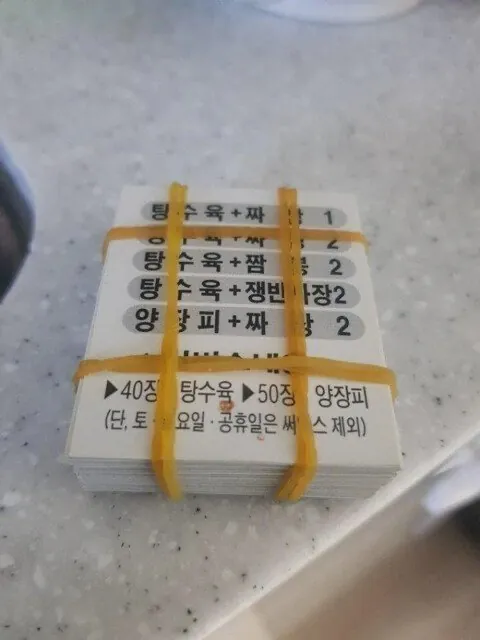
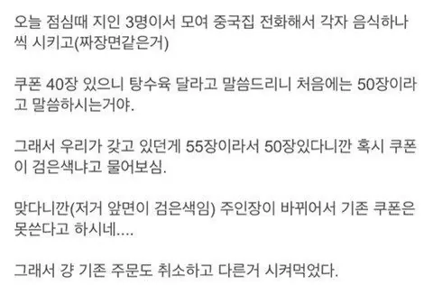

탕수육 원가는 얼마나함?
주인 바꺘지만 계속 시켜다랄고 좋게 이야기하고 보내주면 계속 시킬텐데
권리금주고 기존가게 왜 사냐 븅신이 따로 없음ㅋ
쿠폰을 저만큼 모을 정도로 시켜먹는 손님 버려버리기 ㅋㅋㅋ
언제적 쿠폰이냐 한 10년전 글인듯
요즘도 쿠폰제 하는데 많음
나도 동네 BBQ중에 쿠폰주는곳만 시켜서 저번주에 쿠폰으로 한마리 공짜로 먹음 ㅋㅋ
돌대가리 장사꾼이 넘 많아
사장이 바꼈다고 안되기도 하고. 한번 쿠폰으로 먹어봐서 열심히 시켜서 모았떠니 ㅋㅋ
학교 다닐때 애들끼리 모은 쿠폰으로 팔보채 시켜 먹은적 있었는데 제대로 나오더라
공짜로 중식 좋아하는 고객 유치할 수 있는 기회를 차버림 ㅋㅋㅋㅋ
저 정도면 앞으로 계속 시킬 손님인데
걍 갖다 차버리네 ㅋㅋㅋ
오히려 서비스를 더챙겨줘야지 50번이나 시킨 고객인데 ㅉㅉ
울동네는 바뀐 가게가 전 가게 쿠폰 주던데 ㅋㅋㅋ
저집 채권 부도났네